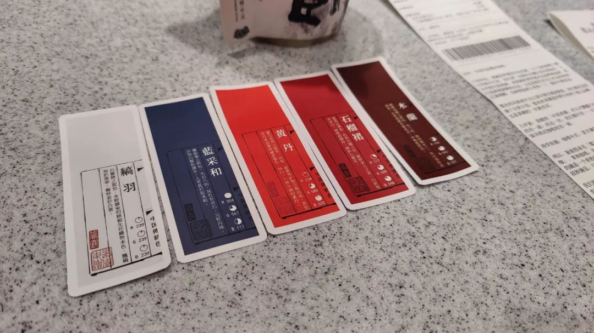

古法摸鱼，有一句谚语“我是一个保安，上班为了下班。”近期意义上做一名街溜子，只带着相机出门扫街感觉又遇到了瓶颈。也许是没有了新鲜感，也许就是无聊了，也许哪天要把想法全都用一项介质表达出来，这些都无法表达全部，表达的全部也会被客体再次加工，而这并不让人自在。街上拿撮箕一笤帚打过去，遍地都是神经病。那么，与其在街上随便乱走，开着Pocket像巡逻，不如随便找一个神经病专门对着这个人逻。用另一种视角来看，也许是被尾随了。但是从我的视角来看，这个人是随便选的，可能只是出现在了我想要去的路上，也许能跟到聪明的地方。这一点是从都那里听说的。都声称自己没法考驾照，因为随时在路上走路就会放空自己，常常随便跟着走在自己前面的人走了很远。私以为妙极。所以我也打算在路上随便选一些人来给他们附加一些他们并不知道的意义。因为外表受限，身高超过一八零、体重超过一六零的人，不管在哪种街溜子情况下都会显得有些aggressive，让这一计划也许会对别人造成困扰，譬如以为真的有变态在跟着自己。其实只是无聊。跟马浪谈这个计划，马浪也是街上的皮划艇。但是我们最好不要玩这个计划，不然如果真跟上了不做正当职业的人，可能会被误认为是乔装打扮的刑警。所以，出去这样随机逻人的时候只能和外表温婉的人一起。这样多少只会被认为是恰好顺路，而不是疑窦悄生。得找伙伴一起，这无疑为逻人增加了一些难度。身边找到这样外表的朋友倒是不难，但是convince逻人是件也许好玩的事却不容易。最近遇到了一些，即使我把全部的情商树都定向种植，也难以排派齐整的事情。按下不表。昨天轻装出门，不带包，和洛洛去岳麓山户外了八公里半。下山后，去笨萝卜用过晚餐，虽然步数、消耗和workout圈圈圆圆都闭合了，但还是觉得要走消些。初尝试选一对看起来沉浸小世界的路人开始逻，一般这样一对行走的人步伐稍慢，而且注意力都在对方，不会太在意几个身位之后发生的事。我们也没有刻意跟着同一对。这一对进了喜茶，就换下一对继续往前走的。他们走到了雨里，就换另一对在屋檐下行走的。刚选到人，这人就回头了，朝我们来的方向走过去。没必要莽撞地又回头去跟，于是自主意识短暂上线。Overall，被几波不同的人在国金街兜兜转转了三个单边。听起来似乎不太聪明，实则也有国金街路人里观光客群体比例较高的缘故。开始变得很活跃，每天都想跟人说很多话不停的说而且有逻辑。可以徒步十五公里去吃饭。可以上山下山。可以去小食店跟第一次见面的老板攀谈并且送ta随身携带的小礼物。朋友见面约饭看我吃饭的样子都如此描述「好怕衔瑜晚一纳秒到饭店都会饿死在路上」但我确实瘦了。别人想知道关于我的任何事情我都愿意说，有没有逻辑不管、是不是真的也不管。去拍照也并非不情愿。我在路上给别人拍了照然后上前说我拍了你，把图传给你吧然后听听别人夸我也敢直接提要求去旁边的鸳央买一杯空山新雨后不要加椰果碎昨天看到有人说焦躁到想把猪头剁碎又重新捏成猪头形状。我寻思着这人还挺温柔，猪头这样的东西都来弄一出手作退火，对猪好好。我知道大部分人都对前面这些内容不感兴趣。虽然我写东西的时候没有读者意识，但并不代表我的耳朵出了问题。On the countrary, 我耳朵很好，比一般人的听力都要好。

